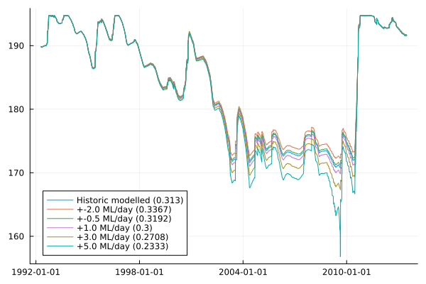

Simple two-system interaction
Here, a two-node network including a river and a dam is represented. The example is based on the Lower Campaspe catchment - a small semi-arid basin in North-Central Victoria, Australia.

The dam is the primary water store for farmers in the area. In this simplified example, we investigate the effect of changing water demands and related policies on historic dam levels. Water demands may shift due to choice in cultivated crops, changing water management practices, investment into more efficient irrigation systems, choice in crops, or a systemic change to water policies.
In essence, this is a cursory investigation into "what might have been" if the regional context were different.
For the purpose of this example, the farm water requirements are defined as a volume of daily water requirements throughout a growing season. A growing season is the period of time over which a crop is cultivated, and is assumed to be between May and February. In practice, water requirements are provided by another model.
using CSV, DataFrames, YAML
using Dates
using Plots
using Streamfall
# Load climate data - in this case from a CSV file with data for all nodes.
# Indicate which columns are precipitation and evaporation data based on partial identifiers
climate = Climate("../test/data/campaspe/climate/climate.csv", "_rain", "_evap")
# Historic extractions from the dam
extraction_data = CSV.read("../test/data/campaspe/gauges/dam_extraction.csv", DataFrame; comment="#")
# Load the example network
sn = load_network("Example Network", "../test/data/campaspe/two_node_network.yml")
# Run the model for the basin to obtain baseline values
run_basin!(sn, climate; extraction=extraction_data)
baseline_dam_level = sn[2].level
baseline_dam_outflow = sn[2].outflow
# Get represented dates for simulation
sim_dates = Streamfall.timesteps(climate)
# Create DataFrame to use as a template to store water extractions
extractions = copy(extraction_data)
"""
Convenience function handling interactions with all "external" models.
Note: We are using a burn-in period of a year.
"""
function run_scenario(sn, climate, extractions, increased_demand; burn_in=366)
reset!(sn)
inlets, outlets = find_inlets_and_outlets(sn)
extractions = copy(extractions)
sim_dates = Streamfall.timesteps(climate)
prep_state!(sn, length(sim_dates))
for (ts, date) in enumerate(sim_dates)
if ((month(date) >= 5) || (month(date) <= 2))
# Within growing season (May - Feb)
# Additional agricultural water demand (ML/day) from historic conditions
# This would normally come from another model indicating daily water demands.
extractions[ts, "406000_releases_[ML]"] += increased_demand
end
for outlet in outlets
run_node!(sn, outlet, climate, ts; extraction=extractions)
end
end
# Return dam levels for assessment
return sn[2].level[burn_in:end]
end
"""
A hypothetical Critical Threshold index.
Mean of proportional distance to critical threshold (default 55% of dam capacity).
Values of 1 indicate the dam is always full, negative values indicate the dam levels are
below the critical threshold.
Greater values indicate greater water security but may have trade-offs with regard to
environmental outcomes and farm profitability.
"""
function critical_threshold_index(levels; threshold=0.55)
max_level = 195
min_level = 160 # mAHD
# Essentially proportion of dam capacity
relative_level = ((levels .- min_level) ./ (max_level - min_level))
# Distance
indicator = (relative_level .- threshold) ./ (1.0 - threshold)
return round(mean(indicator), digits=4)
end
ct_index = critical_threshold_index(baseline_dam_level[366:end])
f = plot(sim_dates[366:end], baseline_dam_level[366:end]; label="Historic modelled ($(ct_index))")
results = Vector{Vector{Float64}}(undef, 5)
for (i, daily_demand) in enumerate([-2.0, -0.5, 1.0, 3.0, 5.0])
results[i] = run_scenario(sn, climate, extractions, daily_demand)
ct_index = critical_threshold_index(results[i])
plot!(sim_dates[366:end], results[i]; label = "+$(daily_demand) ML/day ($(ct_index))")
end
display(f)
# savefig("simple_water_demand.png")
Streamfall.temporal_cross_section(sim_dates, calib_data[:, "406000"], sn[2].level)